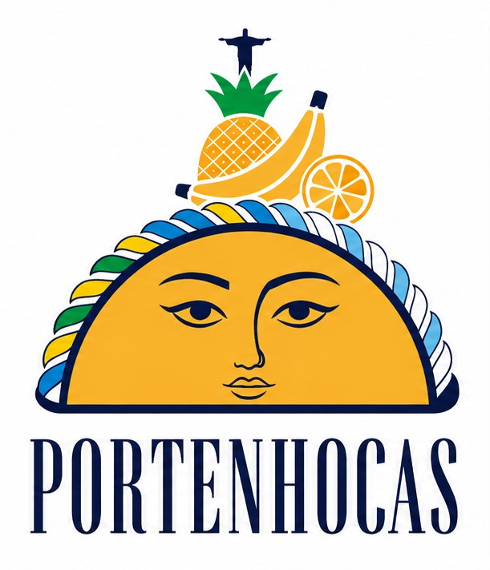

A Argentina encontrou o Brasil dentro de uma empanada.
Um carioca e um argentino que viraram amigos numa cidade que não era de nenhum dos dois. Anos depois, os dois moram no Rio — e a mesma obsessão por comida boa virou a Portenhocas. Massa argentina de verdade, recheios que passeiam entre Buenos Aires e o Rio. Metade porteña, metade carioca. Inteira feita à mão.
O lado porteño da dupla. Traz a massa, a técnica e a teimosia de quem testa a receita até ela ficar certa.
O lado carioca da dupla. Traz os sabores do Rio, o olhar de quem viu mundo e o calor da mesa brasileira.
Sem atalhos, sem pré-pronto. Cada empanada passa pelas nossas mãos, com os melhores ingredientes que a gente encontra.
Feita do zero, do jeito tradicional. A base de tudo — e a parte que mais demorou pra acertar.
Cozidos por nós, com tempo e tempero. Generosos, suculentos, nunca secos.
Escolhidos a dedo. Qualidade que dá pra sentir já na primeira mordida.
Direto do forno. Massa douradinha por fora, recheio quente por dentro.
Esses são os sabores que já testamos e aprovamos — entre carne, queijo e um toque do Rio. Os clássicos argentinos estão chegando.
Em dois passos: escolha a quantidade e os sabores. A gente recebe tudo pelo WhatsApp. Pedidos com 5 dias de antecedência — R$ 9 a unidade, R$ 90 a dúzia.